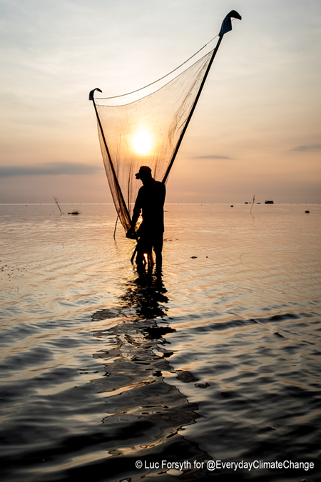

Causes
- Greenhouse Effect
- Gases that play a part in climate change
- Volcanic Eruptions
- Ocean Currents
- Solar Radiations
- Earth Orbital Changes
What I can do
- Reduce energy use
- Better walk than use car for transportation
- Make every drop of watercount
- Cool wash and hang to dry
- Switch to "greenpower"
- Reduce Reuse Recycle
- Plant trees
Articles of Today

Somalia Drought by Famine Early Warning Systems Network (FEWS NET)
Dead livestock are scattered on the ground in drought-ridden Somalia in this 2006 photograph. Read more...
The future of Earth rests upon us by Jeremy Sutton-Hibbert
As scientists attempt to determine if the Earth has entered a new era called the Anthropocene, where human activity is said to be pushing our planet into unchartered territory, the responsibility of securing the future of our planet rests on each and every one of our shoulders. Read more...
A fisherman checks his nets for shrimp on Cambodia’s Tonle Sap Lake by Luc Forsyth
Over the past few centuries, the world has no doubt changed and progressed immensely. In spite of this, one thing remains constant - the ocean has been a source of food for tens of thousands of years and continues to play a vital role in the survival of our climate, marine life and humanity. Read more...